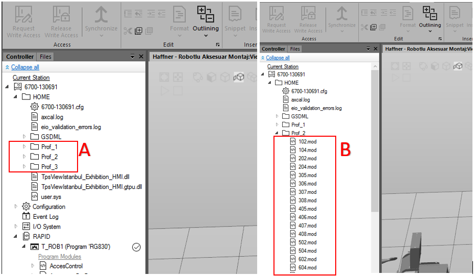
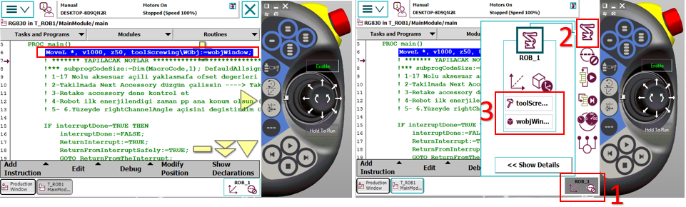
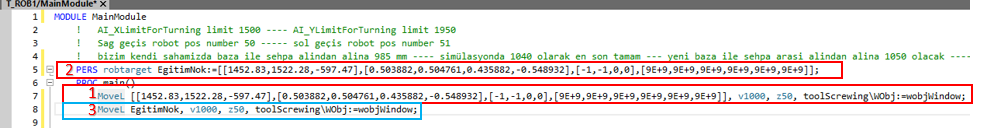
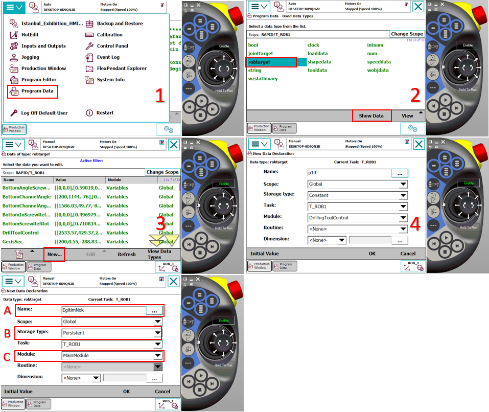
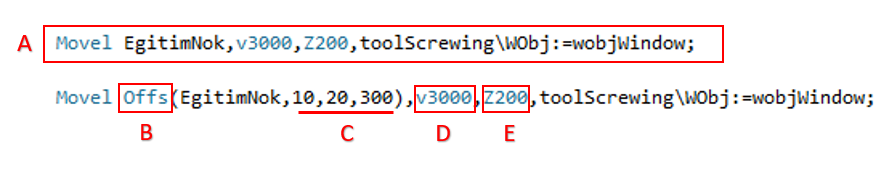
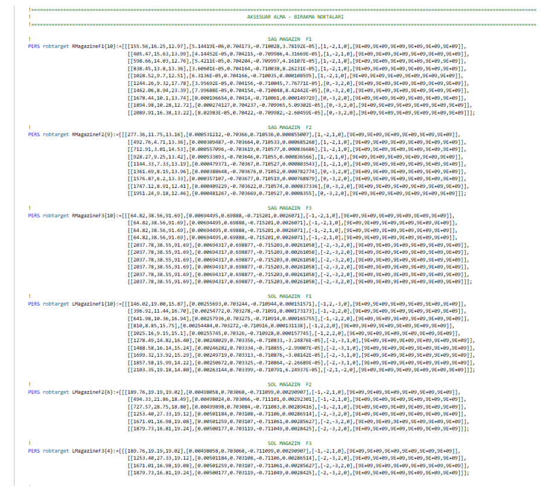
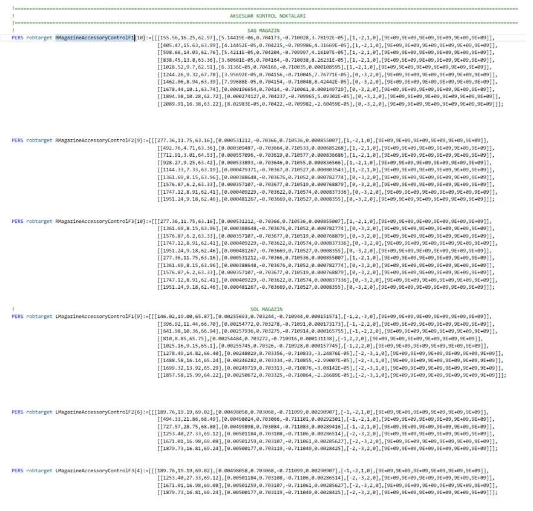

Software Notes
1. RG830 Robot Software Manual
The project infrastructure in RG830 is written according to macro logic. Each accessory has its own macro. Macros are shaped according to whether accessories are attached to the surface or channel. When the frame is presented, starting from the top front surface and going clockwise:
1 (Top Front) - 2 (Right Front) - 3 (Bottom Front) - 4 (Left Front)
5 (Top Channel) - 6 (Right Channel) - 7 (Bottom Channel) - 8 (Left Channel)
The assembly surface macro is performed according to the surface number I provided above.
Example: - Macro 102 ---> Accessory 1 to surface 2 - Macro 204 ---> Accessory 2 to surface 4 - Macro 2805 ---> Accessory 28 to surface 5
Macros are written in the HOME folder on the Robot side, separated according to the profile depth measurement.

A: 1 number 70mm profile, 2 number 76mm profile, 3 number 88mm profile
B: Shows the macros for each accessory listed under the profile name.
2. Introducing New Points and Naming
- METHOD 1

1: Touch the line on the pendant where you want to introduce the point to mark it.
2: Opens command names.
3: The commands you want to add are listed here. When you add by pressing MoveL from movement commands, it asks whether to add below or above the marked point.
When the MoveL command is added via FlexPendant, the '*' (asterisk) symbol will appear in the coordinates on the relevant line. When saving the position at this stage, the robot assigns coordinates by referencing the currently selected Tool and Wobj (Work Object) data. To prevent incorrect definitions; before adding the command, make sure that the Tool and Wobj selections to be used are correct.

1: Opens the list
2: Opens movement, tool, and wobj options related to the robot
3: The section where we make Tool and Wobj selection
After these operations, to use this command elsewhere, we need to give a name to the part with '*'. For this reason, we need to define a variable as "robtarget" and assign the coordinate information in the asterisked area by naming this variable. This operation can be performed via the Robot Studio program.

1: The line displayed on FlexPendant as it appears on the Robot Studio screen
2: The variable definition section where named assignment (for example EgitimNok) is made to the asterisked part shown on FlexPendant
3: Using the defined variable name in the asterisked area shown on FlexPendant.
After naming as shown in number 3, since it is the same as number 3, we can delete number 1 from the program to avoid confusion.
Now the EgitimNok variable can be called and used as a name in the program.
- METHOD 2

A: Name given to the point to be introduced
B: Selection of storage type
C: Select which module to save the variable
After clicking OK, it saves the position definition in the selected module according to the previously selected tool and wobj. We can use this variable with the writing style shown in the 3rd red frame in METHOD 1.
3. Offsetting, Speed, and Zone Assignment on Points

A: The simplest form of the defined point. When modifying the point, it is done through this simplest form. Offset notation is not allowed.
B: A function used to offset the robot at specific distances based on a basic reference point (EgitimNok). Instead of teaching a new point, it allows creating movement by deviating from an existing point.
C: X, Y, Z offset values in mm
D: Determines the speed at which the robot's end point (TCP) moves in millimeters per second.
E: The corner (path) parameter that determines how close the robot will approach the target point or how much to "smooth" through the point:
4. Adding New Paths to Magazines
The accessory pickup and drop-off coordinates in the system are stored within an Array architecture configured according to floor and accessory numbers. When adding a new accessory to the system, sequential additions must be made to these arrays to maintain the existing hierarchy.
- New Position Adding Procedure:
Variable Definition: Navigate to the existing accessory array in the Variables module of the program.
Array Expansion: Following the current floor and accessory order, the new coordinate data should be included in the array.
Point Teaching: The robot's physical position for the new index added to the array should be taught and the robtarget data should be updated.
You can see the arrays within Variables in the image below.

- When performing the teaching operation for the newly added path, you can follow the sequence shown in the image below, select the accessory you added, and then click modify to update the point. When performing this operation, the tool selection should be ToolGrip and Wobj should be selected according to the magazine you are introducing.

Each accessory in the system has its own control sensor for presence/absence verification. The following procedure must be followed to correctly define the accessory control point:
- Alignment and Positioning:
After the robot takes the mold from the relevant station, it should exit without compromising the grip plane and orientation (in a linear trajectory). The accessory should be positioned directly opposite the sensor and within the detection distance. The robot's position at this control point should be determined as the position where the sensor sees the accessory most stably and should be recorded.
- Software Structure:
As with pickup and drop-off points, accessory control points are also defined within Array structures specifically named for each accessory group. Sequential addition should be performed for the new path. This way, separate and independent control coordinates can be created for each accessory type. Additions should be made to the LMagazineAccessoryControl and RMagazineAccessoryControl sections in the Variables module within the program. You can see the Arrays for Accessory Control below.

- Recording Operation: After precise positioning is completed, the point recording steps should be performed by following the visual instructions below.